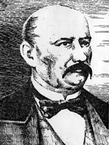
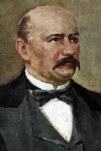
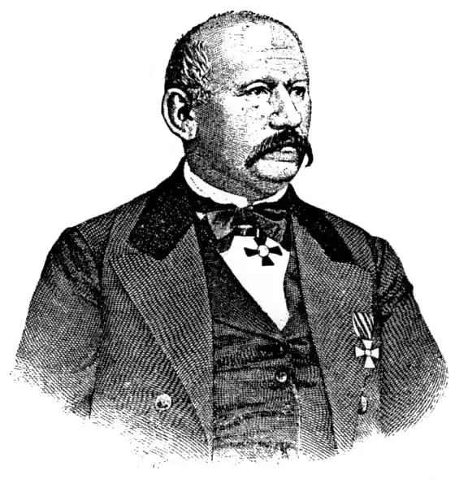

Олекса Петрович Стороженко народився 24 листопада 1806 р. в с. Лисогори Борзнянського повіту (тепер Ічнянського району) на Чернігівщині в родині дрібного поміщика, що належала до старовинного козацького роду, відомого ще з XVII ст. Дитячі роки письменника минули в містечку Велик. Будища Зіньківського повіту на Полтавщині, де він одержав домашню освіту. Згодом навчався у "благородному пансіоні" при Слобідсько-Українській губернській гімназії в м. Харкові. З 1824 р., впродовж майже тридцяти років, О. Стороженко перебував на військовій службі.
Здебільшого служив в Україні, нерідко переїжджав з однієї місцевості в іншу, завдяки чому добре вивчив життя і побут селян в різних регіонах, зустрічався з колишніми січовиками, почув легенди та перекази про Запорозьку Січ. Цей життєвий матеріал ліг в основу багатьох творів письменника.
В літературу О. Стороженко ввійшов романом "Братья близнецы" (1857), що раз і назавжди визначив обраний письменником об'єкт художніх інтересів, незалежно від мови твору, бо в російськомовному романі нуртувала українська стихія. Українська творча спадщина О. Стороженка в жанрі оповідання охоплює зображення побуту, звичаїв, повір'їв українського селянства, героїчних сторінок козацької вольниці, пов'язаних з останнім періодом існування Запорозької Січі, з народно-визвольним рухом Коліївщина, з образами колишніх січовиків. Друковані в журналі "Основа" в 1861-1862 рр., в 1863 р. вони були об'єднані і опубліковані в збірці "Українські оповідання". У 1970 р. друкуються перші розділи повісті О. Стороженка "Марко Проклятий", написаної на основі українських фольклорних джерел, а саме — легенд про вічного страдника-мандрівника Марка, якого за гріхи не приймає земля. Долю Марка письменник накладає на яскраві епізоди визвольної боротьби народу, в якій страдник спокутує свій гріх. Повість лишилася незакінченою, . згодом невідомий автор дописав останні розділи відповідно до плану автора. Вийшовши у відставку 1868 р., О. Стороженко останні роки життя провів на хуторі поблизу м. Бреста (Білорусь), де й помер 18 листопада 1874 року.